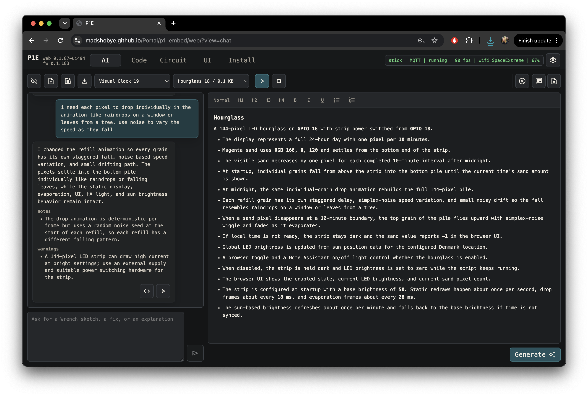
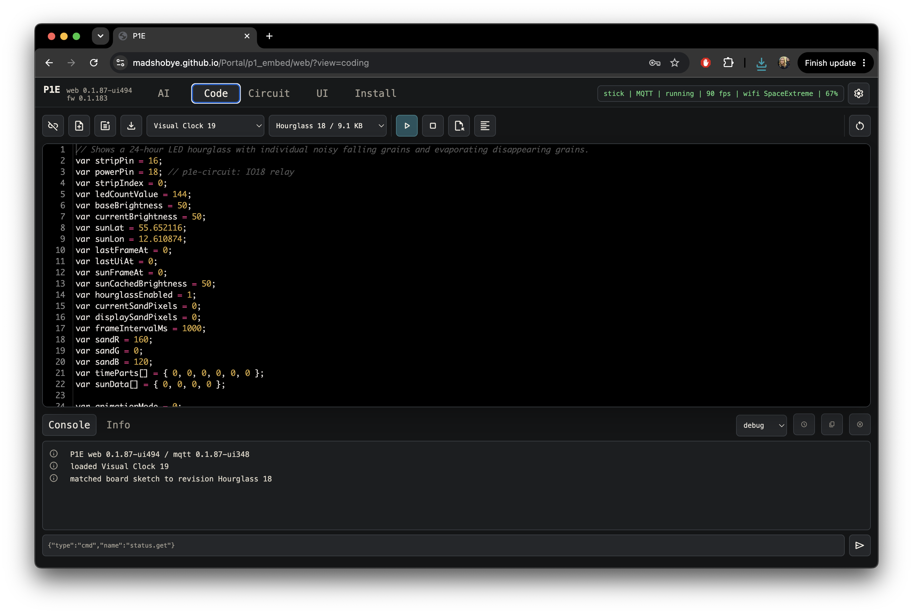
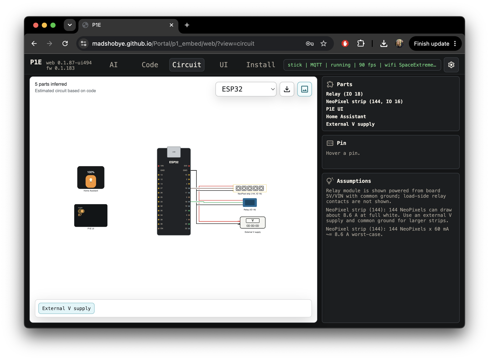

ESP32 creative coding environment
XOBIT lets a board become a live, scriptable object.
Write small scripts in the browser, run them on an ESP32, control LEDs and pins, build a live UI, connect over USB or MQTT, and let the AI assistant help shape code and documentation around the project you are making.
- Code, upload, stop, inspect logs, and recover sketches from the board.
- Keep projects as revisions with code, chat, specification, and circuit notes together.
- Drive NeoPixel-style LED strips, GPIO, HTTP APIs, time, sun position, UI controls, and Home Assistant entities.
XOBIT is already quite stable, but the firmware is under rapid development. Expect to find bugs sometimes, and expect to update the board firmware as the system matures.
This is still alpha-stage software: use it for experiments and prototypes, keep physical access to the board, and make backups before the work matters.
XOBIT is built so the stack stays independent: a static HTML page, firmware on the board, and project data kept close to the person making the work. It should not rely on sudden subscription changes, locked-in add-on models, or a hosted platform that decides what is possible.
Therefore, USB connection and firmware install use Web Serial, which works in Chrome-based browsers such as Chrome and Edge.
Two optional parts can use cloud services: internet connection needs an MQTT broker, and chat needs a ChatGPT API key. A public MQTT broker can work for initial testing because XOBIT encrypts its own communication. Other LLM providers may be added later.
Therefore, there are no cloud backups of your sketches. The running code lives on the board, while projects, revisions, chat, and specifications are stored in your browser local storage. Export projects and make regular backups when the work matters.
The philosophy is freedom to inspect, modify, self-host, extend, and implement projects on your own terms. You should be able to understand the stack, replace parts of it, and keep making even when a service changes direction.
Built-in Capabilities
XOBIT combines board coding, project context, live controls, circuit notes, online connection, AI, Home Assistant, and firmware updates in one browser workspace.
Write scripts, upload, stop, inspect logs, and recover the running sketch from the board.
folder_open Local-first projectsKeep revisions, code, chat, specification, circuit notes, and exportable project JSON together.
usb USB and online controlStart over USB with Web Serial, then continue online with MQTT on WiFi.
auto_awesome AI-assisted makingUse chat to draft scripts and keep specification context near each project revision.
tune Live project UIExpose toggles, sliders, buttons, values, and graphs directly from the running sketch.
schema Circuit workspaceTrack parts, pins, power, wiring notes, assumptions, and generated diagrams beside the code.
home_iot_device Home Assistant bridgeExpose values, buttons, sliders, switches, and prototype state to Home Assistant.
system_update_alt OTA firmware updatesUpdate firmware from the browser with SafeBoot recovery for safer experiments.
Workspace Tour
XOBIT is built around a few connected views: AI for shaping the sketch and specification, Code for editing and uploading, Circuit for wiring notes, and UI for the live controls declared by the running sketch.



API Guide Overview
The API is the set of functions a script calls to reach firmware features. Start with the language guide, then open the API family that matches the thing you are trying to control.
Variables, functions, arrays, loops, sketch structure, and XOBIT-specific syntax notes.
terminalCore runtimePrinting, timing, random values, heap checks, and script error helpers.
memoryGPIO and PWMDigital pins, analog input, touch, PWM, servos, fans, and simple physical outputs.
flareLED stripsNeoPixel-style LED setup, RGB/HSV pixels, brightness, palettes, and frame output.
tuneBrowser UIDeclare live controls, consume UI events, and update values from the running sketch.
home_iot_deviceHome AssistantExpose script-defined entities and consume Home Assistant events.
Getting Started
The first setup flow gives the board enough information to join your network, identify itself, and use the AI features in the browser. USB is the simplest way to start; MQTT is useful once the board is on WiFi.
- Install firmware. Open the Install tab, connect the ESP32 over USB, and flash the current XOBIT firmware.
- Add WiFi. Open Settings, add the network name and password, save, and reboot if the board asks for it.
- Name the board. Use Settings > General to set a friendly device name. This name is shown in the status bar and integrations.
- Add online users. In Settings > Users, create a user name and password for MQTT sign-in. Guest UI access can be enabled separately.
- Add a ChatGPT key. In Settings > AI, save an API key in the browser. The key stays local to the browser unless you create an obfuscated sharing key.
Use the First object walkthrough for the detailed beginner path. It covers browser choice, USB install, board naming, WiFi, online users, a first script, and project backup.